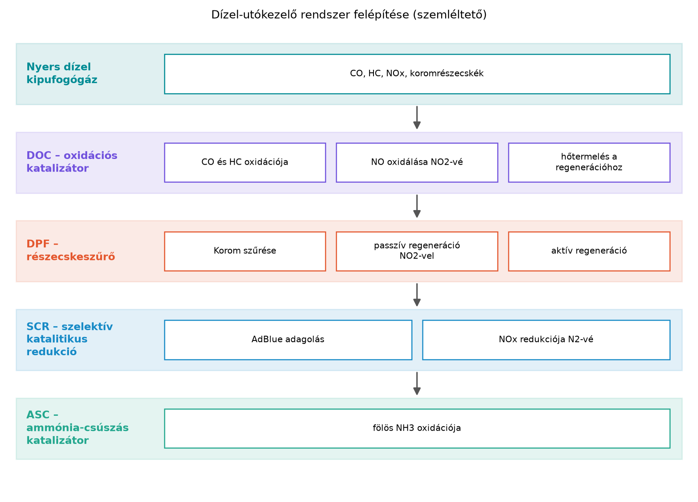

Egy ügyfél azzal hozza be dízel autóját, hogy „szervizre szorul a részecskeszűrő”, időnként füstöl, és hosszú városi használat után mintha gyengébb lenne a motor. A műhelyben a rendszerteszter DPF-regenerációt vagy éppen SCR-rendszer hibáját mutatja. Ahhoz, hogy a hibát ne csak tünetileg kezeljük, ismernünk kell a korszerű dízelmotorok kipufogógáz-utókezelő rendszerének felépítését: miért van szükség oxidációs katalizátorra, részecskeszűrőre és NOx-utókezelésre, hogyan működik az AdBlue-adagolás, és miért életveszélyes vagy jogellenes a rendszerek kiiktatása.
Képzeljük el a kipufogógáz útját a motortól a kipufogócső végéig. A nyers dízel kipufogógáz szén-monoxidot (CO), elégetlen szénhidrogéneket (HC), nitrogén-oxidokat (NOx) és koromrészecskéket (PM) tartalmaz. A mai személygépkocsikban a gáz először jellemzően egy oxidációs katalizátoron (DOC), majd egy részecskeszűrőn (DPF), ezután pedig egy NOx-utókezelő egységen halad át – ez lehet NOx-tároló katalizátor (NSC) vagy szelektív katalitikus redukció (SCR) AdBlue-adagolással. A sorrend gyártótól és motorváltozattól függ, a lényeg azonban az, hogy mindegyik elem más káros anyagot alakít át vagy távolít el.

A fenti rétegábra a tipikus sorrendet mutatja. A gyakorlatban az ECU a hőmérséklet-, nyomás- és NOx-érzékelők jelei alapján vezérli a regenerációt és az AdBlue-befecskendezést.
Definíció. A dízel oxidációs katalizátor (DOC, diesel oxidation catalyst) olyan katalitikus bevonatú, méhsejt-szerkezetű elem, amely a kipufogógázban lévő szén-monoxidot és elégetlen szénhidrogéneket szén-dioxiddá és vízzé oxidálja, továbbá a nitrogén-monoxid (NO) egy részét nitrogén-dioxiddá (NO₂) alakítja. A keletkező NO₂ a részecskeszűrő passzív regenerációjában is részt vesz.
Definíció. A dízel részecskeszűrő (DPF, diesel particulate filter) olyan, jellemzően kerámia (cordierit vagy szilícium-karbid) alapú szűrő, amely a kipufogógáz koromrészecskéit mechanikusan visszatartja. A felhalmozódott kormot időszakosan, magas hőmérsékleten oxidálják (regenerálják).
Definíció. A NOx-tároló katalizátor (NSC, NOx storage catalyst; más néven LNT, lean NOx trap) olyan katalizátor, amely szegény keverékű (oxigénfelesleges) üzemben a NOx-ot kémiailag megköti, majd rövid, gazdag keverékű (oxigénhiányos) fázisban redukáló közegben nitrogénné alakítja.
Definíció. A szelektív katalitikus redukció (SCR, selective catalytic reduction) olyan NOx-csökkentő eljárás, amelyben a kipufogógázba juttatott karbamid-oldatból (AdBlue) ammónia (NH₃) keletkezik, és ez a katalizátor felületén a NOx-ot nitrogénné (N₂) és vízzé (H₂O) redukálja.
Definíció. Az AdBlue 32,5 tömegszázalékos, nagy tisztaságú karbamid-oldat (AUS 32, aqueous urea solution), amely az SCR-rendszer redukálószerének forrása. Fagyáspontja körülbelül −11 °C (ellenőrizendő: a termékre vonatkozó ISO 22241 szabvány szerinti pontos érték).
Összefüggés. A dízel-utókezelő lánc célja, hogy a motor hatásfokának megőrzése mellett a jogszabályi határértékek alá szorítsa a CO, HC, NOx és részecske-kibocsátást. A folyamat hőmérsékletfüggő: a DOC jellemzően 200–300 °C felett kezd hatékonyan működni, a DPF aktív regenerációja 550–650 °C körüli hőmérsékletet igényel, az SCR pedig 180–400 °C közötti tartományban dolgozik jól (ellenőrizendő: a konkrét gyártói értékek).
A DOC felépítése hasonlít az Otto-motorok háromutas katalizátorához: fém vagy kerámia hordozó, amelynek csatornáit nagy fajlagos felületű, nemesfém-tartalmú (jellemzően platina, palládium) bevonat borítja. A dízelmotorok szegény keverékkel működnek, ezért a háromutas katalizátor itt nem alkalmazható, a DOC viszont oxigénfeleslegben is oxidálja a CO-t és a HC-t:
Az elégetlen szénhidrogének pedig szén-dioxiddá és vízzé égnek el a katalizátor felületén:
A DOC további fontos feladata a NO oxidálása NO₂-vé:
Ez a reakció azért kulcsfontosságú, mert a keletkező NO₂ erős oxidálószer; a részecskeszűrőben tárolt kormot már 250–350 °C körül is oxidálni tudja, ami a passzív regeneráció alapja. A DOC az aktív regeneráció során is szerepet kap: utóinjektálással vagy kipufogó-üzemanyag-befecskendezéssel bejuttatott szénhidrogén a katalizátoron oxidálódik, és a felszabaduló hő felmelegíti a mögötte lévő DPF-et.
Az NSC a DOC-hoz hasonló hordozón NOx-tároló anyagokat (jellemzően bárium-oxid) és nemesfém katalizátort tartalmaz. Működése két ütemben történik:
Az NSC előnye, hogy nem igényel külön AdBlue-tartályt és -adagolót, ezért kisebb járművekben gyakori. Hátránya, hogy a tároló kapacitása korlátozott, a regenerálás üzemanyag-fogyasztás-növekedéssel jár, és kéntartalmú tüzelőanyaggal a tároló anyag mérgeződhet (szulfátosodás). A korszerű rendszerekben ezért az NSC mellett vagy helyett gyakran SCR-t alkalmaznak.
Az SCR-rendszer fő elemei:
A vázlaton a kipufogógáz a DOC (1) és a DPF (2) után az első NOx-érzékelőhöz (3) ér; ezután az adagoló (4) fecskendezi be az AdBlue-t, amelyet a keverő (5) oszlat el, majd az SCR-katalizátor (6) és az ammónia-záró katalizátor (7) következik, végül a második NOx-érzékelő (8). Az AdBlue a fűtött tartályból (9) a szivattyúmodulon (10) és a fűtött vezetéken (12) át jut az adagolóhoz; a betöltő (11) kék sapkás. A szerelő a hibakeresésnél ezeket az elemeket keresi.
Az SCR működése során a kipufogórendszerbe fecskendezett AdBlue először a forró gázban termolízissel ammóniára és izociánsavra bomlik:
Az izociánsav ezután vízgőzzel hidrolízissel további ammóniává és szén-dioxiddá alakul:
A keletkező ammónia az SCR-katalizátoron a NOx-ot nitrogénné redukálja. A leggyakoribb úgynevezett normál SCR-reakció:
Ha a DOC előzőleg NO₂-ot is termelt, akkor a gyors SCR-reakció játszódik le:
A gyors reakció alacsonyabb hőmérsékleten is hatékony, ezért a DOC és az SCR együttműködése fontos. Az adagolt AdBlue mennyisége a NOx-tömegáramtól függ: ha túl kevés, a NOx nem alakul át, ha túl sok, a fölösleges ammónia kijuthat a légkörbe (ammónia-csúszás, NH₃-slip), amit az ASC oxidál:
Kristályosodás és fagyás. Az AdBlue vizes oldat, amely −11 °C körül megfagy. A befagyott folyadék térfogata megnő, ezért a tartályt, a vezetékeket és az adagolót fűteni kell. A jármű indítása után a rendszer fűtőbetétekkel vagy hűtőfolyadék-körrel felolvasztja az AdBlue-t. Ha a folyadék beszárad vagy kristályosodik, fehér lerakódás keletkezhet az adagolószelepen és a keverőn, ami eltömítheti a rendszert. A kristályosodásra hajlamos helyeken a gyártók gyakran úgy vezetik a rendszer nyomásmentesítését, hogy a leállítás után a vezetékekből visszaszívják a folyadékot a tartályba.
A DPF leggyakoribb kivitele a zárt csatornás (wall-flow) szűrő. A méhsejt-szerkezet csatornáinak be- és kimenete felváltva van lezárva: a kipufogógáz belép a nyitott végű csatornába, de mivel a másik vége zárt, a gáz a porózus falon keresztül szivárog át a szomszédos, kimeneti oldalon nyitott csatornába. A koromrészecskék a falon fennakadnak, a megtisztult gáz pedig távozik.
A szűrőben felhalmozódó korom mennyiségét a vezérlő elsősorban a nyomáskülönbség-érzékelő jeléből, valamint számítási modellekből becsli. Az érzékelő a DPF előtti és utáni nyomást méri; minél több a korom, annál nagyobb az áramlási ellenállás, tehát annál nagyobb a nyomáskülönbség. A rendszer ezen kívül hőmérséklet-érzékelőket is használ.
A metszeten a gáz a nyitott bemeneti csatornákba lép, a porózus falon át jut a szomszédos kimeneti csatornákba; a korom a bemeneti csatornák falán, a hamu azok végén gyűlik. A jobb oldali oszlopok szerint a 2. példa értékei (12 és 80 hPa) a 30, illetve 150 hPa-es példahatár alatt vannak, a valós eset 28 hPa-es alapjárati értéke még éppen alatta, a 180 hPa-es teljes terhelésű viszont fölötte – ezért ott regeneráció indokolt. A HTML-változatban saját mért értékek és határok is megadhatók.
A DPF regenerációjának két alapvető módja van:
Az aktív regeneráció során a motorvezérlő jellemzően emelt alapjáratot tart, és a folyamat néhány perctől néhány tíz percig tarthat. Ha az aktív regeneráció nem fejeződik be, mert a járművet leállítják, a rendszer a következő út során újra próbálkozik.
Kényszerregenerálás. Amikor a jármű városi, rövid távú használat miatt már nem tudta végrehajtani az aktív regenerációt, és a koromtöltet elér egy kritikus szintet, a gyártói diagnosztikai műszerrel kényszerregenerálást lehet indítani. Ezt csak megfelelő körülmények között (jól szellőztetett műhely, megfelelő hűtőfolyadék- és olajhőmérséklet, hibamentes érzékelők) szabad elvégezni, a gyártói eljárás szerint. A kényszerregenerálás magas kipufogógáz-hőmérséklettel jár, ezért a jármű alatt vagy közelében éghető anyag nem lehet.
Figyelem. A kényszerregenerálás 20–30 percig járó motort és 600–650 °C-os kipufogógázt jelent. Zárt térben csak hőálló kipufogógáz-elszívóval (a szokásos gumitömlő megolvadhat) vagy a gyártó szerint szabadtéren szabad végezni; a jármű a folyamat alatt nem hagyható felügyelet nélkül, a kipufogóvég 1–2 m-es körzetében nem lehet éghető anyag, tűzoltó készülék legyen kéznél (értékek tanulási példák, ellenőrizendő: gyártói eljárás).
Hamutartalom. A szűrő nemcsak kormot, hanem a motorolajból és a tüzelőanyagból származó éghetetlen hamut is visszatart. A hamu nem ég el a regeneráció során, ezért a DPF hosszú futásteljesítmény után hamuval telítődik. A hamu eltávolítása jellemzően csak speciális tisztítóberendezéssel vagy szűrőcserével lehetséges. A DPF élettartamát ezért a megfelelő alacsony hamutartalmú motorolaj (low SAPS) használata is védi.
Adott: Egy dízel személygépkocsi gázolaj-fogyasztása . Az SCR-rendszer AdBlue-adagolása a gyártótól és a terheléstől függően jellemzően a gázolaj-fogyasztás 3–5%-a (térfogatra, ellenőrizendő: gyártói adat). Tegyük fel, hogy a jármű átlagos AdBlue-fogyasztása a gázolaj-fogyasztás 4%-a.
Keresett: AdBlue-fogyasztás 100 km-re és 20 000 km éves futásra.
Megoldás:
Éves futásra:
Ellenőrzés: 52 liter évente körülbelül havi 4,3 liter, ami egy átlagos autó esetén reális nagyságrend (ellenőrizendő: a típusra jellemző tényleges fogyasztás).
Adott: Egy DPF-rendszer nyomáskülönbség-érzékelője a jármű diagnosztikai műszerén alapjáraton (kb. ) értéket mutat, 2000 1/min fordulatszámon terheletlen állapotban , teljes terhelésen pedig értéket mérünk. A gyártói javítási útmutató szerint a koromtöltet magas, ha az alapjárati nyomáskülönbség meghaladja a -t, vagy ha a teljes terhelésű érték tartósan fölé emelkedik (tanulási példa, ellenőrizendő: gyártói adat).
Keresett: Állapítsuk meg, hogy a mért értékek normálisak-e, és indokolt-e aktív regeneráció.
Megoldás: A mért alapjárati és teljes terhelésű értékek a megadott határértékek alatt vannak, tehát a szűrő koromtöltete valószínűleg nem kritikus. Az értékek emelkedő tendenciája viszont azt jelzi, hogy a szűrő fokozatosan telítődik, ezért a járművel érdemes hosszabb, magasabb terhelésű utat megtenni a passzív regeneráció elősegítésére. Ha a rendszerteszter koromtöltet-modellje is magas értéket mutat, gyártói eljárás szerint aktív vagy kényszerregenerálás indítható.
Adott: Az SCR előtti NOx-érzékelő NOx-ot mutat, az SCR utáni érzékelő pedig értéket. Keresett: Az SCR-rendszer átalakítási hatásfoka.
Megoldás:
Ellenőrzés: A 90% feletti NOx-átalakítás egy kiforrott, meleg SCR-katalizátoron reális. Hideg motoron vagy hibás AdBlue-adagolás esetén az érték jelentősen rosszabb lehet.
Előírás. A dízelüzemű járművek típusjóváhagyásához az Európai Unióban a típusjóváhagyási keretrendszer és a kibocsátási előírások szerint meghatározott szén-monoxid-, szénhidrogén-, nitrogén-oxid- és részecske-kibocsátási határértékeket kell teljesíteni (ellenőrizendő: a hatályos EU-rendelet pontos száma, a jelenleg érvényes Euro 6d/Euro VI szakasz és a vizsgálati ciklusok – WLTP, WHSC/WHTC – előírásai). A korszerű dízelmotorok az Euro 5/6 (személygépkocsik és kisteherautók) és Euro VI (nehézgépjárművek) szintjén jellemzően részecskeszűrőt és/vagy NOx-utókezelő rendszert (SCR vagy NSC) igényelnek. A fedélzeti diagnosztika (EOBD) kötelezően figyeli az utókezelő rendszer hatékonyságát, és meghibásodás esetén hibakódot tárol, valamint a műszerfalon figyelmeztető lámpát kapcsol (ellenőrizendő: az EOBD-re vonatkozó hatályos előírások).
Környezetvédelem. A dízel-utókezelő rendszerek eltávolítása, a DPF, SCR, EGR vagy AdBlue-rendszer manipulálása, a katalizátor kiürítése vagy a szoftveres módosítás tilos és jogellenes. Az ilyen beavatkozás a jármű típusbizonyítványát érvényteleníti, a közúti ellenőrzésen vagy műszaki vizsgán azonnali elégtelenséget vonhat maga után, és a jármű kibocsátása a sokszorosára nőhet (ellenőrizendő: a hatályos hazai közlekedési és környezetvédelmi jogszabályok szankciói). A hibás DPF-ből eltávolított korom, hamu, valamint az elhasznált katalizátor veszélyes hulladék lehet; a szűrőket és katalizátorokat a veszélyes hulladék kezelésére vonatkozó előírások szerint kell gyűjteni és leadni. Az AdBlue a bőrt és a szemet irritálhatja, a kiömlött folyadékot fel kell itatni; a beszáradt karbamid lerakódás meleg vízzel tisztítható.
Figyelem. A DPF regeneráció során a kipufogórendszer hőmérséklete és a kipufogógáz hőmérséklete nagyon magas, akár 600–650 °C is lehet. A regenerációt ezért csak jól szellőztetett helyen, éghető anyagoktól távol, a gyártói eljárás szerint szabad végezni. Zárt térben járó motornál kötelező a kipufogógáz-elszívás. Az AdBlue-adagoló rendszer nyomás alatt állhat; a rendszert csak a gyártó által megadott nyomásmentesítés után szabad szerelni.
A dízel-utókezelő rendszerek ellenőrzése a következő mérésekkel történhet:
Eset – DPF-el nem regenerálódó városi dízelautó. A tulajdonos elmondja, hogy autójával szinte csak 3–5 km-es városi utakat tesz meg, és a műszerfalon időnként világít a részecskeszűrő-figyelmeztető lámpa. A rendszerteszter a DPF nyomáskülönbségét alapjáraton , teljes terhelésen értéket mutat, a koromtöltet modellje pedig 80%-os. A hibakódok között gyakori regeneráció-elmaradásra utaló bejegyzés szerepel.
Vizsgálat. A szerviz először ellenőrzi, hogy nincs-e más hiba (EGR-szelep elakadás, tömegárammérő szennyezett, turbófeltöltő töltőnyomás-hiba), mert ezek megakadályozhatják a regenerációt. Ezután a gyártói diagnosztikai műszerrel elindítja a kényszerregenerálást megfelelő körülmények között, hőálló elszívóval, felügyelet mellett. A folyamat alatt a hűtőfolyadék-hőmérsékletet, a kipufogógáz-hőmérsékletet és a nyomáskülönbséget figyelik. A regeneráció végén a koromtöltet 10% alá csökken, a nyomáskülönbség alapjáraton lesz.
Biztonsági korlát. A feladat tanműhelyi környezetre, oktató felügyeletére és a gyártói javítási utasítás betartására vonatkozik; a megadott értékek tanulási példák.
Tanulság. A tisztán városi használat nem kedvez a DPF-nek, ezért az ügyfélnek javasolni kell, hogy hetente legalább egyszer tartós, meleg motort igénylő utat tegyen. Ha ez nem lehetséges, a jármű kiválasztásánál érdemes figyelembe venni a használati módot.
Eset – SCR/AdBlue kristályosodás. Egy másik járműben az SCR-rendszer hibát jelez, a NOx-átalakítási hatásfok alacsony. A szerviz az AdBlue-tartályt és az adagolót átvizsgálva fehér kristályos lerakódást talál az adagolószelep környékén. A fagyáspontmérés azt mutatja, hogy az AdBlue összetétele megfelelő, ezért a hiba oka a beszáradás és a nem megfelelő leürítés. A gyártói útmutató szerint az adagolót tisztítják, a vezetékeket átöblítik, és ellenőrzik a visszaszívó funkciót. A javítás után az SCR hatásfoka visszaáll 90% fölé.
1. feladat (A). Határozd meg a DOC, DPF, NSC és SCR rövidítések jelentését, és írd le mindegyik fő feladatát egy-egy mondatban!
2. feladat (A). Egy DPF nyomáskülönbség-érzékelője alapjáraton , teljes terhelésen értéket mutat. A gyártói adat szerint az alapjárati határ , a teljes terhelésű határ . Normális-e a szűrő állapota? Indokolj!
3. feladat (B). Az SCR előtti NOx-érzékelő értéket, az utáni érzékelő értéket mutat. Számítsd ki a NOx-átalakítási hatásfokot! Ha a hatásfok 85% alá csökken, hibakód tárolódik (feltételezett példa), most várható-e hibakód?
4. feladat (B). Rendezd helyes sorrendbe a dízel-utókezelő elemeket a kipufogógáz áramlási irányában, ha a jármű DOC, DPF, SCR és ASC elemekkel rendelkezik! Indokold, miért előnyös, ha a DOC a DPF előtt van!
5. feladat (C). Egy városi dízelautó DPF-rendszere rövid utak miatt rendszeresen nem tud aktív regenerációt végrehajtani. Magyarázd el a passzív regeneráció feltételeit, és javasolj legalább két olyan intézkedést, amely csökkenti a DPF eltömődésének kockázatát!
6. feladat (D). A diagnosztikai műszer magas DPF-koromtöltetet és magas nyomáskülönbséget mutat, de a szűrőt fizikailag megvizsgálva a csatornák nem tűnnek eltömődöttnek. A nyomáskülönbség-érzékelő csövei épek és nincsenek felcserélve. Mi lehet a hiba? Sorolj fel legalább két lehetséges okot, és írd le, hogyan döntenéd el, melyik áll fenn!
1. feladat (A).
- DOC: dízel oxidációs katalizátor; oxidálja a CO-t és HC-t, NO₂-ot
termel és hőt szolgáltat a DPF-regenerációhoz.
- DPF: dízel részecskeszűrő; mechanikusan kiszűri a
koromrészecskéket.
- NSC: NOx-tároló katalizátor; szegény üzemben tárolja a NOx-ot, gazdag
fázisban redukálja nitrogénné.
- SCR: szelektív katalitikus redukció; AdBlue-ból ammóniát állít elő,
amely a NOx-ot N₂-vé és H₂O-vá redukálja.
2. feladat (A). A mért alapjárati és a teljes terhelésű , tehát a nyomáskülönbség a határértékek alatt van. A szűrő állapota valószínűleg normális; a koromterhelés még nem indokol regenerációt.
3. feladat (B).
Mivel a 85 % pontosan a küszöbértéken van, de nem alatta, hibakód még
nem várható; az érték azonban a határon van, ezért a rendszert
(AdBlue-minőség, adagoló, NOx-érzékelők) tovább kell vizsgálni.
4. feladat (B). Helyes sorrend: DOC → DPF → SCR → ASC. A DOC előnyös a DPF előtt, mert NO₂-ot termel, amely a szűrő passzív regenerációját segíti, és a DOC-ban lejátszódó exoterm reakciók hője is előmelegíti a DPF-et.
5. feladat (C). A passzív regeneráció feltétele a kellően magas kipufogógáz-hőmérséklet és a DOC által termelt NO₂ jelenléte. Városi rövid utakon a motor és a kipufogórendszer nem melegszik fel, ezért a passzív oxidáció elmarad. Javaslatok: hetente legalább egyszer tartós, meleg motort igénylő út (pl. országúti haladás); a motorolaj előírt low SAPS-olajra cseréje; a levegőszűrő és a befecskendezők karbantartása, hogy ne növekedjen a koromképződés; a regenerációhoz szükséges rendszerek (EGR, turbó, hőmérséklet-érzékelők) hibamentessége.
6. feladat (D). Ha a DPF fizikailag nincs eltömődve,
de a diagnosztika magas koromtöltetet és nyomáskülönbséget jelez,
lehetséges okok:
- a nyomáskülönbség-érzékelő hibás (eltolódott nullpont, elektromos
hiba),
- a koromtöltet-modell hamis értéket számol (például korábbi sikertelen
regenerációk miatt, vagy a szoftver frissítésre szorul),
- a nyomásmérő csövek részben eltömődtek, szűkültek vagy
hegesztettek,
- a DPF előtti hőmérséklet- vagy nyomásérzékelő hibás adatot
szolgáltat.
Döntési lehetőség: először hasonlítsuk össze a tényleges
nyomáskülönbséget egy külső, kalibrált nyomásmérővel a gyártói mérési
ponton. Ha az érték alacsony, az érzékelőt vagy a csöveket ellenőrizzük.
Ha az érték magas, a szűrő vagy a kipufogórendszer eltömődését kell
vizsgálni (pl. ellennyomás-mérés a DOC előtt).
A korszerű dízelmotorok kipufogógáz-utókezelése négy fő elemből állhat: a DOC oxidálja a CO-t és a HC-t, valamint NO₂-ot termel; a DPF mechanikusan kiszűri a kormot; a NOx-tároló katalizátor (NSC) vagy az SCR-rendszer csökkenti a nitrogén-oxidokat; az ASC a fölösleges ammóniát oxidálja. A DPF passzív regenerációja NO₂-vel, folyamatosan, magasabb hőmérsékleten zajlik; aktív regenerációja pedig a vezérlő által 550–650 °C-ra emelt hőmérsékleten égeti el a kormot. Az SCR-rendszer AdBlue-ból termolízissel és hidrolízissel ammóniát állít elő, amely a NOx-ot nitrogénné és vízzé redukálja. Az AdBlue −11 °C körül fagy meg, kristályosodásra hajlamos, ezért a rendszert fűteni kell. A DPF nyomáskülönbség-érzékelője a koromterhelést becsli; a kényszerregenerálást csak a gyártói eljárás szerint, ellenőrzött körülmények között szabad végezni. A DPF, SCR, EGR vagy AdBlue-rendszer eltávolítása és manipulálása tilos, jogellenes, és a hatósági vizsgán elégtelenséget von maga után. Továbbvitt eredmény. A DPF és SCR működését és regenerációs stratégiáját felhasználjuk a(z) Emissziós szabályozás, Euro-normák és alternatív tüzelőanyagok, a(z) Környezetvédelmi felülvizsgálat, tanúsítvány és a jármű felkészítése a műszaki vizsgára, valamint a(z) Gázelemzés és füstölésmérés alfejezetekben.
Forrástípusok: hatályos uniós és hazai környezetvédelmi és közlekedési jogszabályok, ENSZ-EGB (ECE) előírások a kipufogógáz-kibocsátásról és fedélzeti diagnosztikáról, gyártói javítási utasítások és katalógusadatok, az AdBlue minőségére vonatkozó ISO 22241 szabvány.
Ellenőrizendő állítások: az Euro 5/6 és Euro VI pontos hatálya, az aktuális kibocsátási határértékek és vizsgálati ciklusok (WLTP, WHSC/WHTC), a DPF regenerációs hőmérséklet-tartományok és nyomáskülönbség-határértékek (gyártói adat), a NOx-átalakítási hatásfokra vonatkozó hibakód-küszöb, az AdBlue fagyáspontjának pontos értéke, valamint a kibocsátásvédelmi rendszerek manipulálására vonatkozó szankciók. A megadott számértékek mind tanulási példák.